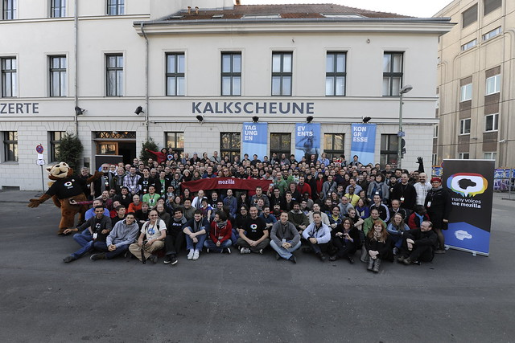

9 décembre 2011
MozCamp 2011
Le mois dernier, j'ai participé au MozCamp EU 2011 à Berlin.
C'était mon premier événement Mozilla en tant que contributeur et ce fut une expérience très enrichissante.
Tout d'abord, j'ai rencontré beaucoup de personnes que je ne connaissais que sur Internet, des personnes de différents pays, mais aussi d'autres de la communauté francophone.
Les conférences données cette année étaient intéressantes et marque clairement le tournant de Mozilla dans le monde du mobile et des applications web.
Ce que j’attendais le plus était de voir Boot2Gecko, nom de code du système d'exploitation, développé pour mobile. Celui-ci repose entièrement sur les «APIs» Web. Cela permet en l’occurrence d'avoir une interface entièrement en HTML/CSS/JS, des technologies libres, ouvertes et standardisées par le consortium W3C. Ce projet B2G est encore à ses débuts et des premières démonstrations nous ont montré l'envoi et la réception de SMS, mais aussi l'écran d'accueil et de gestion d'applications sur téléphone.
Une autre conférence au-quelle j'ai assisté portait sur BrowserID et Open Web Apps, présenté par Chris Heilmann.
BrowerID est une technologie qui permet de se connecter à tous vos sites internet en utilisant seulement un seul e-mail et mot de passe. On s'affranchit donc de compte supplémentaire et aussi on évite aussi de s'authentifier via des sites comme Facebook et Twitter qui vont s’approprier votre identité sur le net. Avec BrowserID votre vie privé est respecté car seul votre mail est conservé.
Open Web Apps est un système permettant de gérer des sites web favoris en tant qu'application. Ainsi vous pouvez démarrer un jeu dans un onglet applicatif par exemple, il sera aussi possible bientôt d'acheter et de vendre ses «applications» sur un site Mozilla et même sur son propre site.
Durant le MozCamp j'ai aussi eu l'occasion de présenter deux choses, tout d'abord le documentaire Code Rush auquel j'ai contribué en créant un transcript ainsi que les sous-titres avec l'aide de Sonny Piers et Frédéric Bourgeon. Ce documentaire retrace les origines de Mozilla à la Silicon Valley dans les bureaux de Netscape. Il a été projeté vendredi soir, à la fête d'accueil et introduit par William Q, Chris Hoffman premier employé de Mozilla (apparaissant dans le documentaire), Sonny P et moi-même.
Le projet autour de ce documentaire n'est pas fini, en effet un site va rapidement être en place, coderush.tv. Il permettra de visionner le documentaire avec les sous-titres en différentes langues.

Commentaires 0
Aucun commentaire.